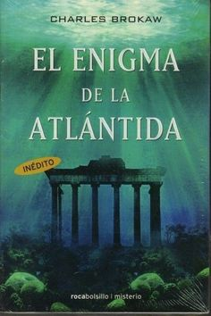

Libros
-

Dan Brown
El código Da Vinci es una novela de misterio escrita por Dan Brown y publicada por primera vez por Random House en 2003. El Opus Dei estaría presuntamente involucrado en una conspiración para encubrir la verdadera historia de Jesucristo, quien se habría casado con María Magdalena y habría tenido descendientes que llegaron a Francia, en concreto la dinastía merovingia. La teoría expuesta literariamente por Brown implica que el cristianismo habría vivido conscientemente dentro de una mentira fraguada por la Iglesia católica durante los últimos dos mil años. Esto ha despertado gran cantidad de críticas en los medios académicos por contener errores históricos, geográficos, religiosos y culturales y por realizar afirmaciones sobre hechos presuntamente históricos sin aportar pruebas. Estas críticas han llevado incluso a la redacción de por lo menos diez libros que pretenden refutar sus argumentos.

Otto Frank
Le toco vivir en su corta existecia momentos muy dificiles, primero en Alemania despues de la llegada de Hitler al poder y luego en Holanda, durante la icupacion nazi de ese pais en 1941 se promulgaba en Holanda, uno tras otro, decretos de amenazas-algunas encubiertas y otras no tando contra los judios, y desde enero de 1941 recibieron la orden de presentarse para ser enviados a campo de trabajo.Los Frank, papaOtto, mama Edith, Ana y su hermana Margot, comenzaron a buscar la manera de huir y buscaron un refugioo.Oculta con su familia, otra familia judía (los Van Pels) y un dentista (Dussel), en una buhardilla de unos almacenes de Ámsterdam durante la ocupación nazi de Países Bajos, Ana Frank con trece años, cuenta en su diario, al que llamó «Kitty», la vida del grupo. Ayudados por varios empleados de la oficina, permanecieron durante más de dos años en el achterhuis (conocido como la casa de atrás) hasta que, finalmente, fueron delatados y detenidos. Ana escribió un diario entre el 12 de junio de 1942 y el 1 de agosto de 1944.
Charles Brokaw
El enigma de la Atlántida” es una documentación novelada de los últimos descubrimientos arqueológicos y científicos donde se atreve a desafiar las opiniones tradicionales acerca de la historia humana, narrando una extraordinaria historia en la que hay una extraña fricción entre el establecimiento de la novela y el diálogo de los personajes.Contribuye en una narración para los amantes de la fantasía que seguramente encontrarán muchas cosas que nos llevaran a través de un viaje fascinante de investigación de una lengua desconocida y de la Atlántida.